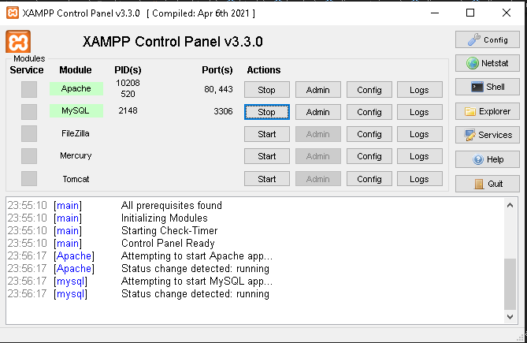
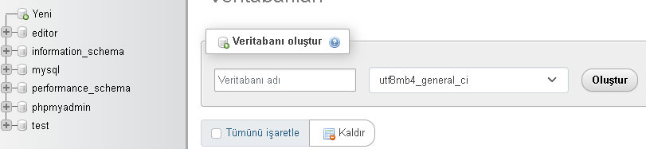
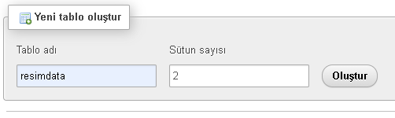
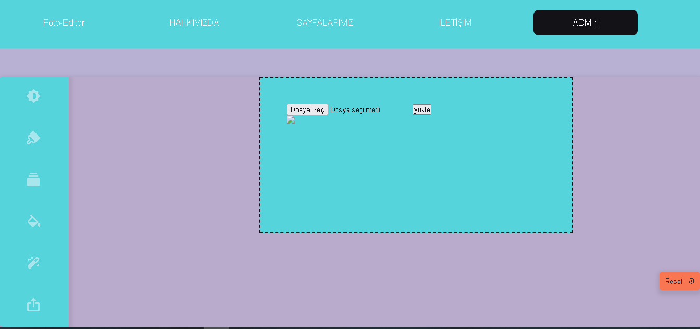
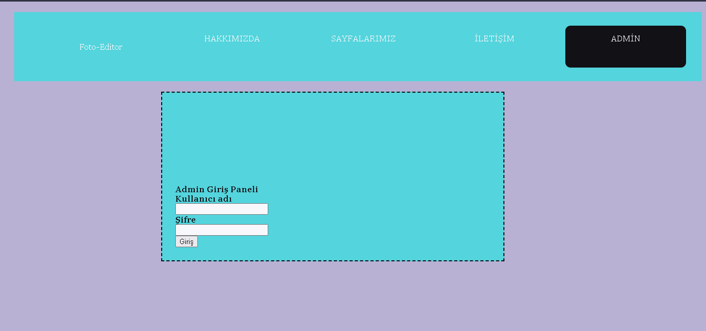
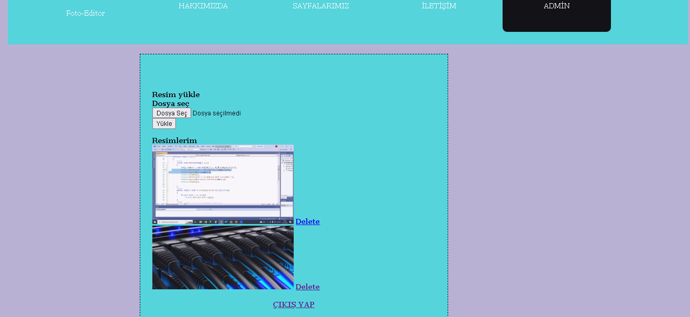

<!DOCTYPE html>
<html lang="en">
<head>
    <meta charset="UTF-8">
    <meta http-equiv="X-UA-Compatible" content="IE=edge">
    <meta name="viewport" content="width=device-width, initial-scale=1.0">
    <title>Document</title>
</head>
<body>
    
</body>
</html>

<!DOCTYPE html>
<html lang="en">
<head>
    <meta charset="UTF-8">
    <meta http-equiv="X-UA-Compatible" content="IE=edge">
    <meta name="viewport" content="width=device-width, initial-scale=1.0">
    <link href="https://cdn.jsdelivr.net/npm/bootstrap@5.1.3/dist/css/bootstrap.min.css" rel="stylesheet" integrity="sha384-1BmE4kWBq78iYhFldvKuhfTAU6auU8tT94WrHftjDbrCEXSU1oBoqyl2QvZ6jIW3" crossorigin="anonymous">
    <title>Document</title>
    <link rel="stylesheet" href="tanıtım.css">
</head>
  <style>
  body {
    background-color: rgb(247, 222, 184);
    animation:  10s infinite;
	align-items: center;
	justify-content: center;
	background: #7fe9db;
    
}
@keyframes color-wave{
0%{background: #f8f8f8;}
10%{background: #ecaaaa;}
20%{background: #e45c5c;}
30%{background: #f52929;}
40%{background: #00f179;}
50%{background: #2ce086;}
60%{background: #86e7ae;}
70%{background: #e9d66d;}
80%{background: #e8eb3a;}
90%{background: #cfe604;}
100%{background: #6057eb;}
}
.container {
      
    padding: 10px;
    
    padding: 20px;
}
.container2 {
      
      padding: 10px;
      border: solid rgb(0, 0, 2) 2px;
      
      padding: 20px;
      background-color:#2e2e2e;
        font-family:Verdana, Geneva, Tahoma, sans-serif;
        font-style:oblique;
  }
</style>
<body>


    <div class="container">
        <div class="row">
            <div class="col-md-12 bg-secondary text-center fs-4 text-white ">
                <h1>FOTO-EDİTOR</h1>

    
            </div>
            
        </div>
       
    </div> 
    <div class="col-md-12 bg-secondary text-left fs-5 text-white container "style="padding: 10px; margin-top: 10px;">
	    <h3 class="text-center"> Ortam Hazırlama </h3>
        <p>Foto-editor adlı uygulamyı yapmak için önce temel olarak edinmemiz gereken programlar var.Ben hepsini barındırdığı için Xamapp´i kullancam.
            Xamapp ugulamasında  Apache ve Mysql'leri başlatmak için start deyip başlatıyoruz.Çalışır duruma geldiğinde yeşil yanacak.
            
        </p>
        
    </div>
    <div class="col-md-12 bg-secondary text-left fs-5 text-white container" style="padding: 20px; margin-top: 10px;">
        <h3 class="text-center"> Resim yükleme </h3>
        <p>Şimdi html ile dosya yüklemek için buton kısmını yapmalısınız burayı size bırakıyorum,yaparsınız diye düşünüyorum.
            Şimdi gerekli resmi yüklerken gerekli olan php kodlarını yorum satırlarıyla açıklıycam.
        </p>
        <p class="container2 " >
              if(isset($_POST['resimyukle'])){<br> 
                $yukleklasor = "resim/";  <i style="color: green;">//yüklenecek klasör</i><br> 
                $tmp_name = $_FILES['yukle_resim']['tmp_name'];<i style="color: green;">//yukle_resim dosya seçme bölgesi adı olacak </i><br> 
                $name = $_FILES['yukle_resim']['name'];<br> 
                $boyut = $_FILES['yukle_resim']['size'];<i style="color: green;">//boyut belirlemek için gerekli olçak</i><br> 
                $tip = $_FILES['yukle_resim']['type'];<i style="color: green;">//tip belirlemek için gerekli olçak</i><br> 
                $uzanti = substr(  $name, -4, 4   ) ;<i style="color: green;">//substr kodu parantez içindeki belirtilen string değikeni parçalar</i><br> 
                $rasgelesayi = rand(10000,50000);<i style="color: green;">//sitenin güvenliği için dosya ismini random değiştirmek için</i><br> 
                $rasgelesayi2 = rand(10000,50000);<br> 
                $resimad = $rasgelesayi.$rasgelesayi2.$uzanti;<br> 
        </p>
    </div>
    <div class="col-md-12 bg-secondary text-left fs-5 text-white container" style="padding: 20px; margin-top: 10px;">
        <p>Sırada yükleyeceğimiz resmin tipi boyutu ve resim seçmememiz durumunda uyarı gelmeli bunları yaptıktan sonra dosyayı yükleyebiliyor olacağız ama localde. </p>
        <p class="container2 " >
            <i style="color: green;">//dosya varmı kontrol</i><br>
            if(strlen($name)== 0){<br>
            echo "bir dosya seçiniz";<br>
            exit();<br>
            }<br>
            <i style="color: green;">//size kontrol</i><br>
            if($boyut> (1024*1024*5)){<br>
              echo "dosya boyutunuz 5mb'den büyük olamaz";<br>
             exit();  <br>
                }<br>
           <i style="color: green;"> //tip kontrol</i><br>
             if($tip !='image/jpeg' && $tip !='image/png' && $uzanti !='.jpg'){<br>
             echo ("yanlızca jpeg veya png formatında yükleyebilirsiniz");<br>
             exit();  <br>
                }     <br>   
        </p>
    </div>
    <div class="col-md-12 bg-secondary text-left fs-5 text-white container" style="padding: 20px; margin-top: 10px;">
        <h3 class="text-center"> Veri Tabanı Oluşturma </h3>
        <p>Şimdi biraz Sqlle ilgilenelim.Xamppden Mysql admine basarak ulaşabilrisiniz.
            Şimdi bir veritabanı oluşturalım.Sol üste yeni yazan yere tıklayın veri tabanı oluştur kısmı geldiğinde veri tabanı ismini girin ve utf8mb4_turkish_ci seçmeniz Türkçe karakter girmeniz durumunda sıkıntı çıkarmayacaktır.
           <br> <br>
            Tablo adı girin ve  sütun sayısını 2 yapmanız bizim için yeterli olcaktır.
            <br>Tablo oluştuğunda ad kısmına birine resim_id türüne varchar "A.İ" kısmını işaretleyin başka bişey yapmanıza gerek yok.
            Diğeri içinde resim_ad yaptım türü int olarak kalsın.Kaydete tıklayın.Şuan tam anlamıyla Mysqlde veri tabanı oluşmuş durumda.
            Hadi sitemize bağlayalım.
        </p>
       
    </div>
    <div class="col-md-12 bg-secondary text-left fs-5 text-white container" style="padding: 20px; margin-top: 10px;">
        <h3 class="text-center"> Veri Tabanı ile Bağlantı Kurma </h3>
        <p>Bağlan.php adında yeni bir dosya oluşturdum.Bağlanıp bağlanamadığımzı kontrol edmek içinde bir mesaj gönderiyoruz.
            Eğer başarlı bir şekilde bağlandıysanız print ile yazdırdığım yazıyı yorum satırı hale getirebilirsiniz.
        </p>
        <p class="container2 " >
        try{<br>
        $db = new PDO("mysql:host=localhost;dbname=editor;charset=utf8", "root", "");<br>
        //print "Bağlantı Başarılı!";}<br>
        catch(PDOException $mesaj){<br>
        echo $mesaj->getMessage();}</p>
    </div>
    <div class="col-md-12 bg-secondary text-left fs-5 text-white container" style="padding: 20px; margin-top: 10px;">
        <h3 class="text-center">Yüklenen Resimlerin Sitede Gözükmesini Sağlama </h3>
        <p>Artık geç kaldığımız bi şey var resim sitede gözüksün artık değilmi.Yine kod satırlarında yorumla sizlere yardımcı olucam.


        </p>
        <p class="container2 " >
         $dir ="resim/"; <i style="color: green;">//Resimlerin kayıt edilceği dosya ismi</i> <br>
         if (is_dir($dir)){<br>
         if ($dh = opendir($dir)){<br>
         while (($file = readdir($dh)) !== false){<br>
                    
                    if($file=="." OR $file==""){} else { ?> <br>                  
                        img  style="width: 450px;" src="resim/ ?php echo $resimad;<i style="color: green;">//Php ile açtığız paranetezin arasına html kodu eklemek için phpyi kapatıp html kodunu yazıp devam eden php için yeniden açmalıyız.</i><br>
                     $file;closedir($dh) ?>"> <br>
             <?php<br>
             }} <br>
         }}<br>
    </div>


    <div class="col-md-12 bg-secondary text-left fs-5 text-white container" style="padding: 20px; margin-top: 10px;">
        <h3 class="text-center"> Resimleri Veri Tabanına Kaydetme </h3>
        <p>Şimdide siteye yükledğimiz resimleri veri tabanına kayıt edelim.

        </p>
        <p class="container2 " >
        try{<br>
        $db = new PDO("mysql:host=localhost;dbname=editor;charset=utf8", "root", "");<i style="color: green;">//dbname=veriyapsı ismi olcak</i><br>
        print "Bağlantı Başarılı!";}<br>
        catch(PDOException $mesaj){<br>
        echo $mesaj->getMessage();}</p>

        <p>ve ilk yaptığımız if(isset)in içinde olcak biçimde bu kodları kullanmalıyız.</p>
        <p class="container2 " >  
            move_uploaded_file($tmp_name, "$yukleklasor/$resimad");<br>
            $resimsor = $db->prepare("insert into resimdata set resim_ad=:ad ");<br>

            $resimyukle = $resimsor->execute(array('ad' => $resimad));<br>
        </p>

    </div>
    <div class="col-md-12 bg-secondary text-left fs-5 text-white container" style="padding: 20px; margin-top: 10px;">
        <h3 class="text-center"> Admin Paneli Oluşturma </h3>
        <p>Sırada admin panali oluşturmak kaldı admin.php adında dosya oluşturdum.ilk olarak giriş yerini oluşturalım.

        </p>
        <p class="container2 " > 
            
            $dir = "resim/";<i style="color: green;">//Resimlerin kayıt yeri</i>  <br>

            $username = 'admin';  <i style="color: green;">//Kullanıcı adı</i> <br>
             $password = 'admin';  <i style="color: green;"> //Şifresi</i><br>

            if(isset($_POST['username'])){<i style="color: green;">//Girişin doğru olup olmadığnı kontrol ediyoruz</i><br>
             $fromuser = $_POST['username']; <br>
            $frompass = $_POST['password']; <br>
            if($fromuser==$username || $frompass==$password){<br>
            $_SESSION["access"] = 1;}<br>
            else{<br>
            echo "Invalid Username or Password";}}<br>
        </p>
    </div>
    <div class="col-md-12 bg-secondary text-left fs-5 text-white container" style="padding: 20px; margin-top: 10px;">
        <h3 class="text-center"> Admin Panelinde Galleri Oluşturma </h3>
        <p>
            Admin panelinde giriş ekranı oldu.Artık yaptığmız resimleri bura da görebilcek ve silebilcek durama getireceğiz.
        </p>  
        <p class="container2 " >  
        if(isset($_GET['del'])){<i style="color: green;"> //Galerimizde resim silmek için bu kodlar olcak</i> <br>
            unlink($dir.'/'.$_GET['del']);}<br>
        if(isset($_GET['logout'])){<i style="color: green;"> //Oturumu kapatmak için</i><br>
            session_destroy();}<br>
        if(isset($_POST['fileupload'])){<i style="color: green;"> //Galeriden de resim yükleyebilceğiz.</i><br>
            $dirfile = $dir.basename( $_FILES['file']['name']);    <br> 
            if(move_uploaded_file($_FILES['file']['tmp_name'], $dirfile)) {  <br>
                echo "File uploaded successfully!";  <br>
            } else{  <br>
                echo "Sorry, file not uploaded, please try again!";  }  }<br>
        $useraccess = $_SESSION["access"];<br>
    </p>
    <p>
        Dosyaları admin panelinde de görür hale getirmemiz gerekli.Html içinde resimlerin görünmesini istediğimiz yerede bu kodları kullanıyouz.
    </p>
    <p class="container2 " >
        ?php <br>
        if (is_dir($dir)){<br>
        if ($dh = opendir($dir)){<br>
        while (($file = readdir($dh)) !== false){<br>
        if($file=="." OR $file==".."){} else {  ?><br>
        div class="col-md-3"><br>
        img src=" ?php echo $dir; ?>/ ?php echo $file; ?>" width="50%" class="img-thumbnail"><br>
        a href="?del= ?php echo $file; ?>" onclick="return confirm('Are you sure you want to delete this item?');"> Delete /a><br>
         /div><br>
                                	
        ?php<br>
        }}<br>
        closedir($dh);}} ?><br>
    </p>
    <p>Panelimiz de hal olduğuna göre geresi size kalmış css ve html kısmına değinmiycem benim yaptığım örnekğide göstercem zaten iyi çalışmalar. </p>
    </div>
    <div class="col-md-12 bg-secondary text-left fs-5 text-white container" style="padding: 20px; margin-top: 10px;">
    
    
    <video width="400" height="200" style=" margin: 10px;" controls="controls">
        <source src="inlenre.mp4" type="video/mp4" />
        
        
</div>

</body>
</html>
